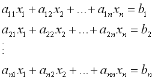

Q. What are linear algebraic equations?
A. Linear algebraic equations are equations of the form shown below where
xi (i=1,2...n) are the n unknowns, aij (i, j=1,2...n) are the coefficients and
bj are the constants.

These n equations
can be solved for the n unknowns using alorithms such as Gaussian Elimination, LU decomposition, etc.
Users are encouraged to read through the following primer:
Linear Algebraic Equations Primer
| Examples | Tutorials | MATLAB programs |
|---|---|---|
| Solve for 3 unknowns x,y & z. | linear1.m & linear2.m | |
| Solve for currents in a circuit. | linear_electricalcircuits.m | |
| Solve for the acceleration and tensions for 3 falling parachutists. | linear_3parachutists.m |